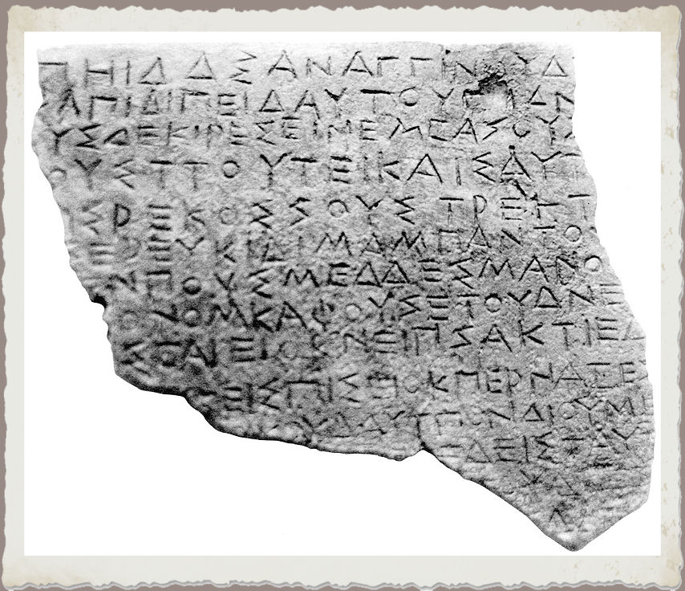

Home |
Le federazioni osche |
Localizzazione musei e siti |
Chi siamo |
Dove trovarci |
Il Museo, ospitato nella sede comunale di Roccagloriosa, accoglie numerose testimonianze archeologiche del IV e del III secolo a.C. rinvenute all’interno del territorio del piccolo centro cilentano. In particolare è qui conservata la tabula bronzea opistografa con iscrizione osca risalente al IV-III secolo a.C.
|
Frammento di tabula bronzea con iscrizione osca (Faccia A) (IV-III Secolo a.C.) |
Frammento di tabula bronzea con iscrizione osca (Faccia B)  (IV-III Secolo a.C.) |